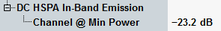

DC HSPA In-Band Emission Limit
In-band emission requirement for dual carrier HSUPA is specified in 3GPP TS 34.121, section 5.13.5.5. A requirement of the connection is defined for a dual carrier HSUPA connection using fixed reference channel and BPSK modulation in uplink.

DC HSPA in-band emission power limit setting
The measurement bandwidth is 3.84 MHz centered on each carrier frequency.
The in band emission of the tested carrier must not exceed the value -23.2 dBc.